기계설계기사 (2017-05-07 기출문제)
1과목: 재료역학
1. 공칭응력(nominal stress : σ)과 진응력(true stress : σ) 사이의 관계식으로 옳은 것은? (단, ε은 공칭변형율(nominal strain), ε는 진변형율(true strain)이다.)
- σ = σ (1+ε)
- σ = σ (1+ε)
- σ = ln(1+σ)g
- σ = ln(σ+ε)
(정답률: 58%)

2. 그림과 같은 일단고정 타단지지보의 중앙에 P=4800N의 하중이 작용하면 지지점의 반력(R)은 약 몇 kN인가?
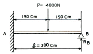
- 3.2
- 2.6
- 1.5
- 1.2
(정답률: 14%)
3. 그림과 같은 직사각형 단면을 갖는 단순지지보에 3kN/m의 균일 분포하중과 축방향으로 50kN의 인장력이 작용할 때 단면에 발생하는 최대 인장 응력은 약 몇 MPa인가?
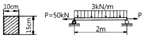
- 0.67
- 3.33
- 4
- 7.33
(정답률: 34%)
4. 두께가 1㎝, 지름 25㎝의 원통형 보일러에 내압이 작용하고 있을 때, 면내 최대 전단응력이 -62.5MPa이었다면 내압 P는 몇 MPa인가?
- 5
- 10
- 15
- 20
(정답률: 16%)
5. 그림과 같은 부정정보의 전 길이에 균일 분포하중이 작용할 때 전단력이 0이 되고 최대굽힘모멘트가 작용하는 단면은 B단에서 얼마나 떨어져 있는가?
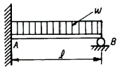
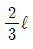
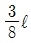
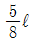
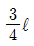
(정답률: 53%)
6. 그림과 같은 단순보에서 전단력이 0이 되는 위치는 A지점에서 몇 m 거리에 있는가?
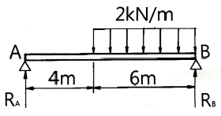
- 4.8
- 5.8
- 6.8
- 7.8
(정답률: 56%)
7. 다음 막대의 z방향으로 80kN의 인장력이 작용할 때 x 방향의 변형량은 몇 ㎛인가? (단, 탄성계수 E=200 GPa, 포아송 비 v=0.32, 막대크기 x=100㎜, y=50㎜, z=1.5m 이다.)
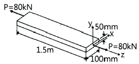
- 2.56
- 25.6
- -2.56
- -25.6
(정답률: 43%)
8. 그림과 같은 단순보(단면 8㎝ x 6㎝)에 작용하는 최대 전단응력은 몇 kPa인가?
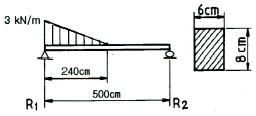
- 315
- 630
- 945
- 1260
(정답률: 22%)
9. 길이 15m, 봉의 지름 10㎜인 강봉에 P=8kN을 작용시킬 때 이 봉의 길이방향 변형량은 약 몇 ㎝인가? (단, 이 재료의 세로탄성계수는 210GPa이다.)
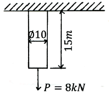
- 0.52
- 0.64
- 0.73
- 0.85
(정답률: 39%)
10. 그림과 같이 강선이 천정에 매달려 100kN의 무게를 지탱하고 있을 때, AC 강선이 받고 있는 힘은 약 몇 kN 인가?
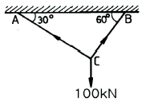
- 30
- 40
- 50
- 60
(정답률: 63%)
11. 직경 d, 길이 ℓ인 봉의 양단을 고정하고 단면 m-n 의 위치에 비틀림모멘트 T를 작용시킬 때 봉의 A부분에 작용하는 비틀림모멘트는?
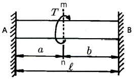
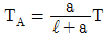
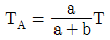
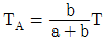
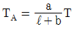
(정답률: 58%)
12. 그림과 같은 직사각형 단면의 보에 P=4kN의 하중이 10° 경사진 방향으로 작용한다. A점에서의 길이 방향의 수직응력을 구하면 약 몇 MPa인가?
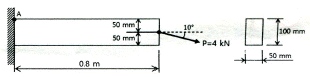
- 3.89
- 5.67
- 0.79
- 7.46
(정답률: 25%)
13. 그림과 같이 단순화한 길이 1m의 차축 중심에 집중하중 100kN이 작용하고, 100rpm으로 400㎾의 동력을 전달할 때 필요한 차축의 지름은 최소 몇 ㎝인가? (단, 축의 허용 굽힘응력은 85MPa로 한다.)
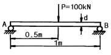
- 4.1
- 8.1
- 12.3
- 16.3
(정답률: 30%)
14. 그림과 같이 한변의 길이가 d인 정사각형 단면의 Z-Z 축에 관한 단면계수는?
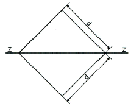
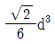
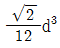
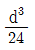
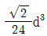
(정답률: 40%)
15. 오일러의 좌굴 응력에 대한 설명으로 틀린 것은?
- 단면의 회전반경의 제곱에 비례한다.
- 길이의 제곱에 반비례한다.
- 세장비의 제곱에 비례한다.
- 탄성계수에 비례한다.
(정답률: 47%)
16. 동일한 전단력이 작용할 때 원형 단면 보의 지름을 d에서 3d로 하면 최대 전단응력의 크기는? (단, τmax는 지름이 d일 때의 최대전단응력이다.)
- 9τmax
- 3τmax
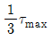
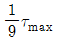
(정답률: 50%)
17. 세로탄성계수가 210GPa인 재료에 200MPa의 인장응력을 가했을 때 재료 내부에 저장되는 단위 체적당 탄성변형에너지는 약 몇 Nㆍｍ/m3인가?
- 95.238
- 95238
- 18.538
- 185380
(정답률: 50%)
18. 그림과 같이 전체 길이가 3Ｌ인 외팔보에 하중 P가 B점과 C점에 작용할 때 자유단 B에서의 처짐량은? (단, 보의 굽힘강성 EI는 일정하고, 자중은 무시한다.)
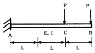
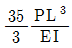
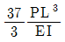
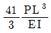
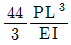
(정답률: 43%)
19. 정사각형의 단면을 가진 기둥에 P= 80kN의 압축하중이 작용할 때 6MPa의 압축응력이 발생하였다면 단면의 한 변의 길이는 몇 ㎝인가?
- 11.5
- 15.4
- 20.1
- 23.1
(정답률: 38%)
20. J를 극단면 2차 모멘트, G를 전단탄성계수, ℓ을 축의 길이, T를 비틀림모멘트라 할 때 비틀림각을 나타내는 식은?
- ℓ/GT
- TJ/Gℓ
- Jℓ/GT
- Tℓ/GJ
(정답률: 50%)
2과목: 기계제작법
21. 일반적으로 화학적 가공공정 순서가 가장 적절한 것은?
- 청정 - 마스킹(masking) - 에칭(etching) - 피막제거 - 수세
- 청정 - 수세 - 마스킹(masking) - 피막제거 - 에칭(etching)
- 마스킹(masking) - 에칭(etching) - 피막제거 -청정 - 수세
- 에칭(etching) - 마스킹(masking) - 청정 - 피막제거 - 수세
(정답률: 63%)
22. 다음 중 각도 측정 게이지가 아닌 것은?
- 하이트 게이지
- 오토 콜리메이터
- 수준기
- 사인바
(정답률: 62%)
23. 다음 중 목형제작 시 주형이 손상되지 않고 목형을 주형으로부터 뽑아내기 위한 것은?
- 코어 상자
- 다웰 핀
- 목형 구배
- 코어
(정답률: 50%)
24. 연삭숫돌에서 눈메움(loading)의 발생 원인으로 가장 거리가 먼 것은?
- 연삭숫돌 입도가 너무 적거나 연삭 깊이가 클 경우
- 숫돌의 조직이 너무 치밀한 경우
- 연한 금속을 연삭할 경우
- 숫돌의 원주 속도가 너무 클 경우
(정답률: 37%)
25. 다음 중 심냉 처리의 목적으로 가장 적절한 것은?
- 잔류 오스테나이트를 마르텐자이트화 시키는 것
- 잔류 마르텐자이트를 오스테나이트화 시키는 것
- 잔류 펄라이트를 오스테나이트화 시키는 것
- 잔류 솔바이트를 마르텐자이트화 시키는 것
(정답률: 54%)
26. 절삭공구로 공작물을 가공 시 유동형 칩이 발생하는 조건으로 틀린 것은?
- 절삭깊이가 클 때
- 연성재료를 가공할 때
- 경사각이 클 때
- 절삭속도가 빠를 때
(정답률: 44%)
27. 주물을 제작할 때 생사형 주형의 경우, 주물중량 500kg, 주물의 두께에 따른 계수를 2.2라 할 때 주입시간은 약 몇 초인가?
- 33.8
- 49.2
- 52.8
- 56.4
(정답률: 42%)
28. 공작기계의 회전 속도열에서 다음 중 가장 많이 사용되는 것은?
- 등차급수 속도열
- 등비급수 속도열
- 대수급수 속도열
- 조화급수 속도열
(정답률: 47%)
29. 주철을 저속으로 절삭할 때 나타나는 것으로 순간적인 균열이 발생하여 생기는 칩의 형태는?
- 유동형(flow type)
- 전단형(shear type)
- 열단형(tear type)
- 균열형(crack type)
(정답률: 65%)
30. 다음 연삭숫돌의 표시방식에서 V가 나타내는 것은?
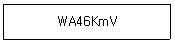
- 무기질 입도
- 무기질 결합제
- 유기질 입도
- 유기질 결합제
(정답률: 63%)
31. 두께 2mm의 연강판에 지름 20mm의 구멍을 뚫을 때 필요한 전단력의 크기는 약 몇 kN인가? (단, 판의 전단저항은 250N/mm2)
- 18.24
- 26.87
- 31.42
- 42.55
(정답률: 62%)
32. 가공의 영향으로 생긴 스트레인이나 내부 응력을 제거하고 미세한 표준조직으로 기계적 성질을 향상 시키는 열처리법은?
- 소프트닝
- 보로나이징
- 하드 페이싱
- 노멀라이징
(정답률: 56%)
33. 다음 중 연삭입자를 사용하지 않는 가공법은?
- 버핑
- 호닝
- 버니싱
- 래핑
(정답률: 39%)
34. 테르밋 용접(thermit welding)에 대한 설명으로 옳은 것은?
- 피복 아크 용접법 중의 한가지 방법이다.
- 산화철과 알루미늄의 반응열을 이용한 방법이다.
- 원자수소의 발열을 이용한 방법이다.
- 액체산소를 사용한 가스용접법의 일종이다.
(정답률: 75%)
35. 다음 중 고속회전 및 정밀한 이송기구를 갖추고 있으며, 다이아몬드 또는 초경합금의 절삭공구로 가공하는 보링 머신으로 정밀도가 높고 표면거칠기가 우수한 내연기관 실린더나 베어링 면을 가공하기에 가장 적합한 것은?
- 보통 보링 머신
- 코어 보링 머신
- 정밀 보링 머신
- 드릴 보링 머신
(정답률: 62%)
36. 진공 중에서 용접하는 방법으로 일반 금속의 접합뿐만 아니라 내화성 금속, 매우 산화되기 쉬운 금속에 적합한 용접법은?
- 레이저용접
- 전자빔용접
- 초음파용접
- TIG용접
(정답률: 31%)
37. 다음 중 보석, 유리, 자기 등을 정밀 가공하는데 가장 적합한 가공 방법은?
- 전해 연삭
- 방전 가공
- 전해 연마
- 초음파 가공
(정답률: 63%)
38. 일반적으로 봉재의 지름이나 판재의 두께를 측정하는 게이지는?
- 와이어 게이지
- 틈새게이지
- 반지름 게이지
- 센터 게이지
(정답률: 50%)
39. 숏피닝(shot peening)에 대한 설명으로 틀린 것은?
- 숏피닝은 얇은 공작물일수록 효과가 크다.
- 가공물 표면에 작은 헤머와 같은 작용을 하는 형태로 일종의 열간 가공법이다.
- 가공물 표면에 가공경화 된 잔류압축응력측이 형성된다.
- 반복하중에 대한 피로파괴에 큰 저항을 갖고 있기 때문에 각종 스프링에 널리 이용된다.
(정답률: 31%)
40. 다음 중 냉간 가공의 특징이 아닌 것은?
- 결정 조직의 미세화 효과가 있다.
- 정밀한 가공으로 치수가 정확하다.
- 가공면이 깨끗하고 아름답다.
- 강도증가와 같은 기계적 성질을 개선할 수 있다.
(정답률: 48%)
3과목: 기계설계 및 기계재료
41. 허용전단응력 20.60MPa인 축에 회전수 200rpm으로 7.36kW의 동력을 전달한다. 이 축의 지름은 약 몇 mm 이상이어야 하는가?
- 39.5
- 44.3
- 48.7
- 55.6
(정답률: 42%)
42. 표준 스퍼 기어에서 모듈을 m이라고 하면 지름피치 P 를 구하는 식으로 옳은 것은?
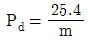
- Pd=25.4m
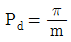
- Pd=πm
(정답률: 54%)
43. 전달동력 2kW, 회전수 250rpm, 축 지름 30mm, 보스의 길이(=키의 길이) 40mm, 키의 허용전단응력 19.6N/mm2 일 때 키의 폭 b는 약 몇 mm 이상으로 설계해야 하는가?
- 3.5
- 4.5
- 5.5
- 6.5
(정답률: 0%)
44. 베어링 번호 6310의 단열 깊은 홈 볼 베어링에 30000시간의 수명을 주려고 한다. 한계 속도지수(dN)=200000[mm ㆍ rpm]이라면, 이 베어링의 최고사용 회전수에 있어서의 베어링 하중은 약 몇 N인가? (단, 이 베어링의 기본 동정격하중은 48kN이다.)
- 1328.32
- 1814.20
- 2485.79
- 3342.27
(정답률: 20%)
45. 2개의 키를 조합하여 축의 키 홈에 때려 박을 수 있도록 그 단면을 직사각형으로 만든키로서 면압력만을 받기 때문에 일반적으로 묻힘키보다 큰 토크를 전달할 수 있는 키(key)는?
- 반달키
- 납작키
- 안장키
- 접선키
(정답률: 38%)
46. 지름 8mm의 스프링 강으로 코일의 평균 지름 80mm, 스프링상수 10N/mm의 코일 스프링을 만들려고 하면 유효 감김수는 약 얼마인가? (단, 선재의 전단탄성계수 80GPa이다.)
- 10
- 8
- 6
- 4
(정답률: 31%)
47. 볼트의 허용전단응력이 40MPa이고, 6개의 볼트로 체결된 플랜지 커플링에 2.6kNㆍm의 토크가 작용하고 있다. 볼트 조립부의 피치원 지름은 160mm일 때 볼트 골지름은 약 몇 mm이상이어야 하는가?
- 8.4
- 10.8
- 13.2
- 16.9
(정답률: 16%)
48. 강판의 두께 12mm, 리벳 구멍의 지름 16mm로 하여 1줄 겹치기 이음으로 할 때 리벳의 전단하중과 판의 인장하중이 같을 경우 피치는 약 몇 mm인가? (단, 강판의 발생하는 인장응력은 40 MPa, 리벳에 발생하는 전단응력은 32 MPa이다. 또한 리벳 지름은 리벳 구멍의 지름과 같다고 본다.)
- 24.5
- 29.4
- 33.6
- 42.7
(정답률: 38%)
49. 브레이크에서 접촉면압력을 q, 드럼의 원주속도를 v, 마찰계수를 μ라 할 때, 브레이크 용량(brake capacity)을 나타내는 식은?
- μqv
- μq/v
- qv/μ
- μ/qv
(정답률: 19%)
50. 관의 안지름을 D [㎝], 평균유속을 v [m/s]라 하면 평균유량 Q [m3/s]은?
- D2v
- πD2v
- πD2v/400
- πD2v/40000
(정답률: 40%)
51. 피아노선재의 조직으로 가장 적당한 것은?
- 페라이트(ferrite)
- 소르바이트(sorbite)
- 오스테나이트(austenite)
- 마텐자이트(martensite)
(정답률: 50%)
52. 마텐자이트(martensite) 변태의 특징에 대한 설명으로 틀린 것은?
- 마텐자이트는 고용체의 단일상이다.
- 마텐자이트 변태는 확산 변태이다.
- 마텐자이트 변태는 협동적 원자운동에 의한 변태이다.
- 마텐자이트의 결정 내에는 격자결함이 존재한다.
(정답률: 62%)
53. 빗금으로 표시한 입방격자면의 밀러지수는?
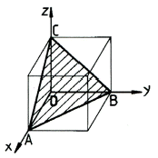
- (100)
- (010)
- (110)
- (111)
(정답률: 72%)
54. 6:4황동에 Pb을 약 1.5 ~ 3.0%를 첨가한 합금으로 정밀가공을 필요로 하는 부품 등에 사용되는 합금은?
- 쾌삭황동
- 강력황동
- 델타메탈
- 애드미럴티 황동
(정답률: 56%)
55. 순철(α-Fe)의 자기변태 온도는 약 몇℃ 인가?
- 210℃
- 768℃
- 910℃
- 1410℃
(정답률: 50%)
56. 고속도 공구강재를 나타내는 한국산업표준 기호로 옳은 것은?
- SM20C
- STC
- STD
- SKH
(정답률: 43%)
57. 스테인리스강을 조직에 따라 분류한 것 중 틀린 것은?
- 페라이트계
- 마텐자이트계
- 시멘타이트계
- 오스테나이트계
(정답률: 40%)
58. 황동 가공재 특히 관 ㆍ 봉 등에서 잔류응력에 기인하여 균열이 발생하는 현상은?
- 자연균열
- 시효경화
- 탈아연부식
- 저온풀림경화
(정답률: 50%)
59. 경도가 매우 큰 담금질한 강에 적당한 강인성을 부여할 목적으로 A 변태점 이하의 일정온도로 가열 조작하는 열처리법은?
- 퀜칭(quenching)
- 템퍼링(tempering)
- 노멀라이징(normalizing)
- 마퀜칭(marquenching)
(정답률: 50%)
60. Fe-C 평형상태도에서 나타나는 철강의 기본조직이 아닌 것은?
- 페라이트
- 펄라이트
- 시멘타이트
- 마텐자이트
(정답률: 30%)
4과목: 기구학 및 CAD
61. 좌표계 1에서 (-1, 0, 3)으로 정의되는 점이 좌표계 2로 이동되었을 때의 좌표값은? (단, 좌표계 1의 원점은 좌표계 2에서 (0, -2, 4)로 표시되며 두 좌표계는 평행이동의 관계에 있다.)
- (-1, -2, 4)
- (4, 0, -1)
- (-2, 2, 4)
- (-1, 2, -1)
(정답률: 16%)
62. 다음 중 숨은선 및 숨은면을 화면상에서 나타나지 않도록 제거하는 방법에 속하지 않는 것은?
- 후향면 제거 알고리즘
- z-버퍼 방법
- 화가 알고리즘
- 레빈슨 알고리즘
(정답률: 50%)
63. STEP에서 부품의 기하 정보를 나타내는 데이터 항목이 아닌 것은?
- 형상 모델 스키마
- 구성 모델 스키마
- 위상 스키마
- 기하 스키마
(정답률: 44%)
64. 다음 곡면들 중 곡면 생성 방법이 나머지 세가지와 근본적으로 다른 하나는?
- B-스플라인 곡면
- Bezier 곡면
- NURBS 곡면
- Coon's 곡면
(정답률: 60%)
65. 서로 다른 컴퓨터 이용 제도시스템에서 생성된 도면 데이터를 교환하는 수단으로서 옳지 않은 것은?
- ASCII
- IGES
- DXF
- STEP
(정답률: 60%)
66. 와이어프레임(wireframe) 모델링의 일반적인 특징이 아닌 것은?
- point와 line으로 형상을 표현한다.
- 자료구조가 상대적으로 단순하다.
- 형상의 내/외부 판별이 가능하다.
- 3차원 형상 표현이 명확하지 않을 수 있다.
(정답률: 58%)
67. 3차원 컴퓨터 그래픽에서 모델 좌표계에 정의한 그래픽 요소를 장치 좌표계로 변환하여 그릴 때의 변환 행렬 순서로 옳은 것은?
- 시각 변환 → 모델 변환 →투영 변환
- 모델 변환 → 시각 변환 → 투영 변환
- 투영 변환 → 시각 변환 → 모델 변환
- 모델 변환 → 투영 변환 → 시각 변환
(정답률: 47%)
68. 다음 B-spline 곡선에 대한 내용 중 ( )안의 알맞은 말로 짝지어진 것은?
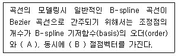
- A: 같고, B: 비주기적
- A: 같고, B: 주기적
- A: 다르고, B: 주기적
- A: 다르고, B: 비주기적
(정답률: 48%)
69. 3차원 모델링 방법 중 3차원 기본 형상(primitives)을 불리언 연산(Boolean operation)에 의해서 형상을 완성시키며 그 과정을 기록하여 모델을 표현하는 기법을 무엇이라고 하는가?
- Wire frame model 법
- Boundary representation 법
- Constructive solid geometry 법
- Surface model 법
(정답률: 45%)
70. 다음 중 파라메트릭 모델링의 일반적 특징이 아닌 것은?
- 도형에 대하여 구속조건의 부여가 가능하다.
- 치수 조건 수정만으로 쉽게 형상을 바꿀 수 있다.
- 불리언(Boolean) 작업에 의해서 주로 수행된다.
- 유사한 형상들의 모델링에 유용하다.
(정답률: 54%)
71. 기계요소에 대한 설명 중 옳은 것은?
- 1점을 중심으로 일정 각도로 요동운동을 하는 것을 레버(lever)라고 한다.
- 1점의 주위를 회전운동 하는 것을 슬라이더(slider)라 한다.
- 2점 주위를 직선운동 하는 것을 크랭크(crank)라 한다.
- 나사 대우(pair)는 회전운동으로만 구성된다.
(정답률: 47%)
72. 그림과 같이 평면 운동하는 5개의 링크로 된 연쇄에서 순간 중심의 수는 몇 개인가?
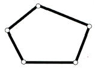
- 5
- 10
- 15
- 20
(정답률: 60%)
73. 어떤 물체를 정지 상태로부터 20000rpm까지 상승시키는데 5분이 소요된다고 한다. 일정한 각가속도로 상승한다고 볼 때 각가속도는 약 몇 rad/s 인가?
- 31
- 23
- 14
- 7
(정답률: 50%)
74. 평벨트 풀리 림의 중앙부를 높게 만들어 주는 가장 큰 이유는?
- 벨트가 풀리에서 이탈하는 것을 방지하기 위하여
- 벨트를 걸기에 편리하도록 하기 위하여
- 벨트를 상하지 않게 하기 위하여
- 주조할 때 편리하기 위하여
(정답률: 54%)
75. 평 기어와 비교하여 헬리컬 기어에 발생하는 단점은?
- 기어의 물림 길이가 작다.
- 소음이 크게 발생된다.
- 동력 전달 효율이 떨어진다.
- 축 방향으로 스러스트가 발생한다.
(정답률: 50%)
76. 그림과 같이 평판 A 위에서 평면 운동을 하는 B 물체의 자유도는?
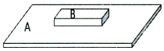
- 1
- 2
- 3
- 4
(정답률: 40%)
77. 기계를 구성하고 있는 부분에서 서로 한정된 상대운동을 할 수 있는 기계구성요소의 조합관계를 대우(pair)라고 한다. 다음 중 대우의 예가 아닌 것은?
- 볼트와 너트
- 핀과 키
- 축과 베어링
- 한 쌍의 기어
(정답률: 65%)
78. 그림과 같이 장축이 2a, 단축이 2b 인 타원형 마찰차 2개가 구름접촉에 의해 회전력을 전달하고 있다. 여기서 A마찰차가 일정한 각속도로 회전한다고 볼 때 B마찰차의 최대 회전비값(B의 최대각속도/A이 평균각속도)은? (단, 회전축간 거리는 2a이다.)
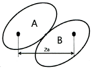
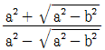
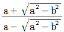
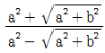
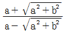
(정답률: 36%)
79. 기어에서 이의 간섭을 막기 위한 방법으로 틀린 것은?
- 이의 높이를 낮게 한다.
- 전위기어로 제작한다.
- 잇수비를 크게 한다.
- 압력각을 크게 한다.
(정답률: 56%)
80. 캠(cam)의 종류 중 평면 캠에 속하지 않는 것은?
- plate cam
- face cam
- translation cam
- spherical cam
(정답률: 67%)
공칭응력은 단면적이 일정한 가상의 응력이며, 진응력은 실제 단면적을 고려한 응력이다. 따라서, 진응력이 더 크게 나타난다.
공칭응력과 진응력의 관계는 다음과 같다.
σ = F/A (공칭응력)
σ' = F'/A' (진응력)
여기서, A' = (1+ε)A 이므로,
σ' = F/(1+ε)A
따라서, 공칭응력과 진응력 사이의 관계식은 다음과 같다.
σ = σ' (1+ε)
즉, 공칭응력은 진응력에 공칭변형율을 더한 값이다. 따라서, "σ = σ (1+ε)"가 옳은 관계식이다.